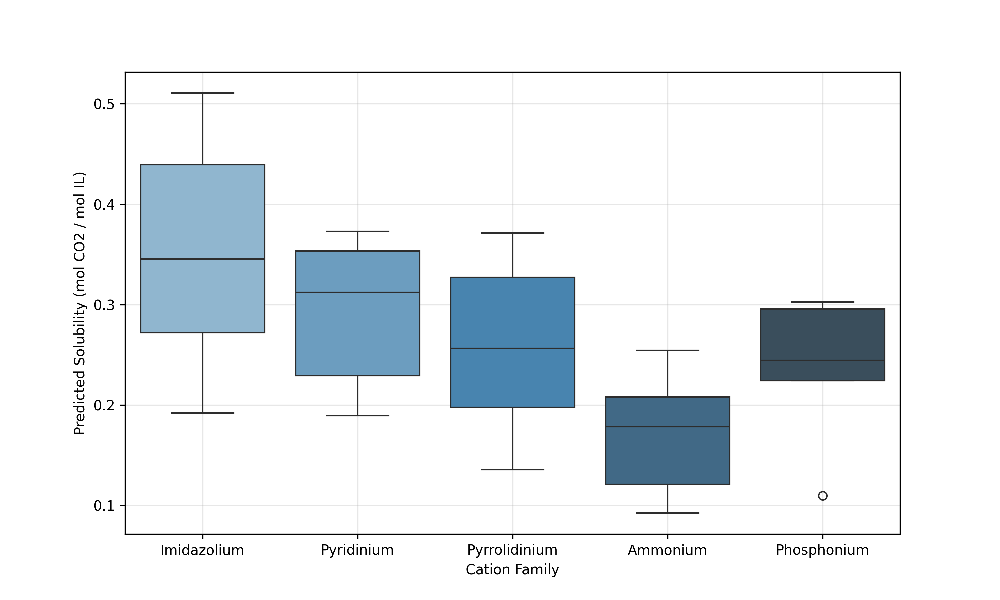

RESEARCH ASSISTANT · COMPUTATIONAL CHEMISTRY · BRIN
Predicting CO₂ solubility in ionic liquids
Where the DFT + machine-learning model stands today, and how BRIN’s HPC and molecular dynamics capabilities can take it further
Speaker notes
Two parts: first, an honest snapshot of what has been built so far: the dataset, the quantum descriptors, the models and the first screening results. Second, a proposal for how to continue at BRIN using Mahameru HPC, quantum chemistry and molecular dynamics. The work is fully computational.MOTIVATION
Ionic liquids can be designed for CO₂ capture, but there are too many to test
THE NEED
Indonesia needs CO₂ capture
High-CO₂ gas fields such as East Natuna (≈70% CO₂) and the 2024 CCS regulation (Perpres 14/2024) make capture solvents a national priority.
WHY IONIC LIQUIDS
Tunable, non-volatile solvents
Negligible vapour pressure, and a cation–anion pair that can be chosen for the job, from physical to chemical CO₂ uptake.
THE BOTTLENECK
Millions of possible pairs
High-pressure solubility measurements are slow and costly. A fast model can rank candidates computationally.
Goal: predict CO₂ solubility (mole fraction) for any ionic liquid from its ion structures, temperature and pressure.
IL–CO₂ solubility · current state
Speaker notes
Context first. Indonesia has CO₂-rich gas reserves like East Natuna, and since Perpres 14/2024 there is a legal framework for carbon capture and storage. Ionic liquids are attractive capture solvents because they barely evaporate and can be tuned by swapping the cation or anion. The problem is the sheer number of possible combinations, so we need a model that screens them computationally first.APPROACH
From ion structures to a screening model in five steps
1 · DATA
Experimental solubility
11,256 literature points for 113 ionic liquids
2 · STRUCTURES
3D ion geometries
SMILES → RDKit embedding → UFF clean-up
3 · DFT
ORCA 6.0
r²SCAN-3c optimisation + frequencies for 78 ions
4 · FEATURES
248 inputs
Orbital energies, dipole, total energy, atom counts, T and P
5 · ML
Models and screening
Ridge, Random Forest, Gradient Boosting, Neural Network
Implemented as 20 Jupyter notebooks plus a small Flask demo app; data, ORCA inputs/outputs and the trained model are versioned on GitHub.
IL–CO₂ solubility · current state
Speaker notes
The whole pipeline in one picture. Literature data gives the target. Each ion is built from its SMILES, pre-optimised with a force field and optimised with r2SCAN-3c in ORCA. Those quantum numbers, plus atom counts and the temperature and pressure of each measurement, become the model inputs. Four model types were compared.DATA
A curated dataset of 11,256 solubility measurements
113
ionic liquids: 50 cations × 26 anions
243–453 K
temperature range
≤ 50 MPa
pressure, from 0.8 kPa upward
0 – 0.95
CO₂ mole fraction (the target)
NEW: TRACEABLE VERSION
Every point now linked to its source
Re-extracted from NIST ILThermo: 12,297 points from 160 publications (2001–2025), each with its DOI and measurement method (static cell 35%, gravimetric 20%, others). Ready for retraining, not yet used by the current model.
IL–CO₂ solubility · current state
Speaker notes
The training set covers 113 ionic liquids, about 100 points each across temperature and pressure. Imidazolium cations dominate. Recently I rebuilt the dataset from NIST ILThermo so every point has a citation, DOI and experimental method; that makes it publishable and lets us weight or filter by measurement method later.QUANTUM DESCRIPTORS
Each ion is described by five DFT numbers
PROTOCOL (CURRENT)
78 ions computed in ORCA 6.0
- Geometry: RDKit 3D embedding and UFF pre-optimisation, one conformer
- Level of theory: r²SCAN-3c optimisation + frequencies, isolated ion in gas phase
- Parsed per ion: total energy, HOMO, LUMO, HOMO–LUMO gap, dipole moment
- Cation and anion values are joined to every measurement of that IL
10
quantum descriptors (5 per ion)
236
element-count columns, mostly zero
+ T, P
= 248 model inputs in total
IL–CO₂ solubility · current state
Speaker notes
The quantum part is deliberately cheap: one r2SCAN-3c optimisation per ion, starting from a single force-field conformer. Five numbers per ion come out of it. Together with an atom count for every element in the periodic table and the measurement conditions, that gives 248 inputs. Most of the atom-count columns are zero, which is something to clean up later.RESULTS
Random Forest predicts held-out points with R² = 0.985
| Model | R² | MAE | RMSE | Train |
|---|---|---|---|---|
| Ridge regression | 0.591 | 0.116 | 0.146 | 0.04 s |
| Random Forest (best) | 0.985 | 0.017 | 0.028 | 1.0 s |
| Gradient Boosting | 0.973 | 0.026 | 0.037 | 1.1 s |
| Neural network (128-64-32) | 0.966 | 0.035 | 0.042 | 20 s |
IN PLAIN TERMS
Typical error ≈ 0.017 mole fraction
Measured on test points from ionic liquids the model has already seen at other temperatures and pressures.
80/20 random split: 9,004 training and 2,252 test points. MAE and RMSE are in CO₂ mole fraction.
IL–CO₂ solubility · current state
Speaker notes
Four models on the same split. The linear model clearly cannot capture the curved pressure dependence. All three nonlinear models do well and Random Forest is best and trains in about a second. Note the wording on the right: these are test points from ILs that also appear in training. I come back to why that matters in the gaps section.RESULTS
Tree models track experiment closely; the linear model cannot

Random Forest and Gradient Boosting
Points hug the diagonal from 0 to about 0.85 mole fraction, with a few outliers at mid-range.
Neural network
Slight bias: under-predicts above 0.6 and over-predicts near zero.
Ridge regression
Fans out at high solubility: the pressure dependence is not linear.
IL–CO₂ solubility · current state
Speaker notes
Predicted against measured solubility on the test set for all four models. The red dashed line is perfect agreement. The neural network shows a small systematic bias at both ends, which suggests it would benefit from tuning or more data at high loading.WHAT DRIVES THE PREDICTION
Pressure dominates; anion energy is the strongest ion descriptor
Permutation importance for the Random Forest: the drop in R² when one input is shuffled (10 repeats, test set).
Pressure
1.87
Temperature
0.19
Anion total energy
0.13
Cation total energy
0.008
Anion HOMO
0.007
Each of the other 7
< 0.005
Caveat: total energy scales with ion size, so it may work as an “anion ID” rather than as chemistry. More physical descriptors are part of the roadmap.
IL–CO₂ solubility · current state
Speaker notes
Shuffling pressure destroys the model, which is expected because solubility is mostly an isotherm in pressure. Among the quantum descriptors the anion matters most, consistent with the literature that the anion controls CO₂ solubility. But be careful: total electronic energy mostly tracks how many electrons the ion has, so the model may be using it to recognise which anion it is. That motivates better descriptors.FIRST SCREENING
Imidazolium ranks highest; [Tf₂N] tops every cation

Predicted CO₂ solubility by cation family across screened ILs (median: imidazolium ≈ 0.35, ammonium ≈ 0.18).
TOP 5 OF 25 IMIDAZOLIUM ILs
323 K, 5 MPa
| Ionic liquid | Predicted x |
|---|---|
| [OMIM][Tf₂N] | 0.643 |
| [HMIM][Tf₂N] | 0.549 |
| [BMIM][Tf₂N] | 0.526 |
| [PMIM][Tf₂N] | 0.521 |
| [EMIM][Tf₂N] | 0.516 |
Longer alkyl chains and [Tf₂N] raise uptake, as in experiment. Most of these ILs are in the training data, so this checks consistency, not discovery.
IL–CO₂ solubility · current state
Speaker notes
Using the model as a screening tool, imidazolium cations come out on top on average and ammonium at the bottom, which matches experimental trends. Among 25 imidazolium combinations, all five [Tf2N] salts rank first and uptake rises with chain length, again as measured. Because most of these ILs were in training, this is a consistency check; the next section explains what has to change before the model can be trusted for new ILs.KNOWN GAPS · 1 OF 2
What R² = 0.985 does not yet tell us
VALIDATION
The split is by data point, not by ionic liquid
Each IL contributes about 100 points along its isotherms. A random split puts the same IL in both the training and the test set, so the score measures interpolation, not prediction for a new IL.
Fix: leave-IL-out and leave-anion-out cross-validation, with errors reported per IL family.
APPLICABILITY DOMAIN
New anion families are extrapolation
82% of points have imidazolium cations, and the anions are mostly fluorinated, sulfonate, sulfate and phosphate ions. Holding out whole anions drops R² to about 0.83, close to a T-and-P-only model (0.78).
Fix: a domain check before every prediction, and descriptors that carry chemistry, not identity (workstream 1).
IL–CO₂ solubility · known gaps
Speaker notes
This is the most important methodological point. Because points from the same IL are in both training and test, R² 0.985 mostly says the model can fill in an isotherm it has partly seen. The real question for screening is how well it predicts an IL it has never seen, and that will be a lower number. Second, the data are dominated by imidazolium and a few anion families. A quick leave-anion-out check gives R² around 0.83, barely above a model that only knows temperature and pressure, so new anion families are where the model is weakest.KNOWN GAPS · 2 OF 2
Inputs to fix before scaling up
DESCRIPTORS
The QM level is minimal
One UFF conformer per ion, optimised with r²SCAN-3c as an isolated gas-phase ion: no conformer search, no ion pairing, no solvent. [DCA] and [PF₆] did not converge.
Fix: the workstream 1 protocol.
DESCRIPTOR EXTRACTION
The parser read the wrong lines
HOMO taken from an unrelated table for 39 of 76 ions; dipole stored as the x component in a.u., and as 0 for 44 ions; energy from the starting geometry, not the optimised one.
Fix: corrected parser is ready; re-extract and retrain.
FIGURES
Some thesis figures are illustrative
The HOMO, ESP, NBO, NCI, IR and RDF panels were drawn as schematics, not computed from calculations.
Fix: replace with real ORCA and MD outputs (workstreams 1–2).
IL–CO₂ solubility · known gaps
Speaker notes
Three practical issues I found while reviewing the code. The descriptor protocol is the cheapest reasonable one, with a single conformer and two anions that never converged. The descriptor parser also read the wrong lines of the ORCA output for the HOMO, the dipole and the energy, so part of the DFT input to the model is noise; a corrected parser already exists. And several thesis figures are schematics; with BRIN's HPC we can replace them with real calculations. Raising these now is better than having a reviewer find them.PART 2 · ROADMAP AT BRIN
From a fast screening model to a validated design tool
Three computational workstreams using BRIN’s HPC and its quantum-chemistry and molecular dynamics expertise.
IL–CO₂ solubility · BRIN roadmap
Speaker notes
Now the forward-looking part: how I propose to continue at BRIN, using the infrastructure and know-how here.THE PLAN
A multiscale loop where each level feeds the next
WS1 · QUANTUM
Better descriptors
Conformers, ion pairs, CO₂ binding and COSMO-RS σ-profiles
WS2 · MOLECULAR DYNAMICS
Bulk liquid behaviour
Density, free volume, CO₂ solvation and Henry constants
WS3 · MACHINE LEARNING
Honest model with uncertainty
Group-wise validation, physical features, error bars
Active learning: the model’s uncertainty chooses which ions and liquids to compute next with QM and MD; every new result goes back into the model.
Runs on BRIN’s Mahameru HPC: CPU nodes for DFT job arrays, NVIDIA DGX GPUs for MD and model training.
IL–CO₂ solubility · BRIN roadmap
Speaker notes
The core idea is a loop across scales. Quantum chemistry gives better molecular descriptors. Molecular dynamics explains how CO₂ sits in the bulk liquid and gives physically meaningful features. The ML model combines them and tells us where it is uncertain, which decides what to compute next. Everything is computational. Each workstream is useful on its own, so the plan degrades gracefully if one part is slower.BRIN RESOURCES
What BRIN makes possible that a laptop cannot
COMPUTE
Mahameru HPC
BRIN’s national HPC, booked through ELSA: CPU partitions for DFT job arrays and an NVIDIA DGX GPU cluster for MD and deep learning.
COMPUTE · TO EXPLORE
ASEAN–Korea HPC Facility
Hosted at BRIN with KISTI and listed with 64 NVIDIA H200 GPUs: a candidate for large MD campaigns and graph-network training.
SOFTWARE AND STORAGE
A shared simulation stack
ORCA 6, CREST/xTB, GROMACS and CP2K installed on the cluster, plus project storage for MD trajectories.
PEOPLE
MD and DFT know-how
The computational chemistry group: force-field choice, simulation protocols and DFT benchmarks [supervisor and collaborators].
Hardware from hpc.brin.go.id and akf-hpc.brin.go.id; allocation to be confirmed with the BRIN HPC team.
IL–CO₂ solubility · BRIN roadmap
Speaker notes
Everything so far ran on a laptop. BRIN changes three things. Compute: Mahameru gives CPU nodes for thousands of independent DFT jobs and DGX GPUs for MD and model training; the new ASEAN–Korea facility hosted at BRIN is worth exploring for bigger runs. Software and storage: a maintained simulation stack instead of my laptop. And people: the group's experience with MD force fields and DFT protocols is exactly what this project lacks today. Please correct me on the allocation details.WORKSTREAM 1 · QUANTUM CHEMISTRY
A defensible QM protocol for every ion
GEOMETRY
Conformers and optimisation
- CREST / GFN2-xTB conformer search
- r²SCAN-3c optimisation and frequencies
- ωB97X-D3/def2-TZVPD single points, diffuse functions for anions
INTERACTIONS
Ion pairs and CO₂ complexes
- Cation–anion and anion–CO₂ binding energies
- DLPNO-CCSD(T) benchmark on a subset
- ESP extremes and charge transfer as descriptors
SOLVATION
COSMO-RS σ-profiles
- CPCM and openCOSMO-RS in ORCA 6
- σ-moments as compact, physical ML features
- COSMO-RS Henry constants as a baseline
About 80 ions, 110 ion pairs and their CO₂ complexes: all independent jobs, run as job arrays on Mahameru CPU nodes. ORCA 6 is free for academic use.
IL–CO₂ solubility · BRIN roadmap
Speaker notes
Workstream 1 upgrades the quantum layer. Proper conformer search and optimisation instead of a force-field geometry; a larger basis with diffuse functions so the anion orbitals mean something. Then ion pairs and CO₂ complexes, which is where the physics of solubility actually is, plus electrostatic-potential and charge-transfer descriptors that describe how strongly each anion can interact with CO₂. Finally COSMO-RS, which ORCA 6 includes, gives sigma-profiles: a small set of physically meaningful features and an independent baseline prediction. Thousands of independent jobs is exactly what an HPC job array is for.WORKSTREAM 2 · MOLECULAR DYNAMICS
Simulate the liquid, not just the ions
SYSTEMS
Benchmarks, then hard cases
- [BMIM][PF6], [BMIM][BF4], [BMIM][Tf2N]: well measured and in our dataset
- Then ILs the model predicts worst, e.g. thiocyanates
- 300–500 ion pairs, several T and CO₂ loadings
METHOD
Force fields and engines
- CL&P or polarisable CL&Pol force fields
- GROMACS on DGX GPUs, ≥ 100 ns per state (ILs are viscous)
- CP2K ab initio MD on small cells to check the force field
OUTPUTS
Properties and ML features
- Density and viscosity against experiment
- Free volume, CO₂ RDFs and coordination
- Henry constants from free-energy methods
MD answers why a liquid absorbs CO₂, gives new features for the model, and replaces the schematic RDF figure with computed ones.
IL–CO₂ solubility · BRIN roadmap
Speaker notes
Solubility is a bulk property, so we need to simulate the bulk liquid. Start with three well-studied imidazolium ILs that are in our dataset, to validate the force field against density, viscosity and published solubility. Then move to the ionic liquids the model gets most wrong, such as the thiocyanates. Non-polarisable force fields usually need scaled charges for ionic liquids; the CL&Pol polarisable version is the more rigorous option, and this is where I would value the group's advice. Ionic liquids are slow, so runs need to be long, which is why GPUs matter. A small ab initio MD study in CP2K gives a reference to check the force field against.WORKSTREAM 3 · MACHINE LEARNING
Make the model honest about new ionic liquids
VALIDATION
Group-wise testing
Leave-IL-out and leave-anion-out cross-validation, with errors per family and per isotherm. Retrain on the 12,297-point referenced dataset.
FEATURES
Fewer, more physical inputs
Replace 236 sparse atom counts with σ-moments, molecular volume, electrostatic-potential extremes and MD-derived features; keep T and P.
MODELS
Uncertainty and structure
Boosted-tree and Gaussian-process ensembles that report error bars; graph neural networks on ion structures, trained on DGX GPUs.
PHYSICS
Built-in thermodynamics
Solubility that rises with pressure and follows Henry’s law at low pressure, so isotherms stay physical when the model extrapolates.
IL–CO₂ solubility · BRIN roadmap
Speaker notes
Workstream 3 rebuilds the model around the question that matters for screening: how good is it for an ionic liquid it has never seen? Group-wise cross-validation answers that honestly. The atom-count block is replaced by a small set of physical descriptors from workstreams 1 and 2. Models should give an uncertainty with every prediction, which is also what drives active learning. And simple physical constraints keep the predicted isotherms sensible outside the training range.DELIVERABLES AND NEEDS
What this delivers, and what it needs from BRIN
DELIVERABLES
- Referenced dataset: 12,297 points from 160 sources (done)
- Validated model with leave-IL-out scores
- QM and COSMO-RS descriptors for all ions and ion pairs
- MD benchmark data and reusable workflow scripts on Git
- Ranked shortlist of candidate ILs with predicted uptake and error bars
- Two manuscripts
NEEDS FROM BRIN
- Mahameru account: [__] CPU core-hours and [__] GPU-hours
- Software on the cluster: ORCA 6, CREST/xTB, GROMACS, CP2K and a Python ML stack
- Supervision on MD force fields and validation
- Storage for MD trajectories, about [__] TB
IL–CO₂ solubility · BRIN roadmap
Speaker notes
On the left, concrete outputs, one of which already exists. On the right, what I need to make the rest happen. The compute numbers are placeholders; I would like to size them with the HPC team once the first benchmark MD runs give real timings.DISCUSSION
Three decisions to make together
PRIORITY
Which workstream comes first, given the HPC allocation?
METHODS
Which DFT level and force field should be our standard?
SCOPE
How much of the roadmap fits the internship?
IL–CO₂ solubility · BRIN roadmap